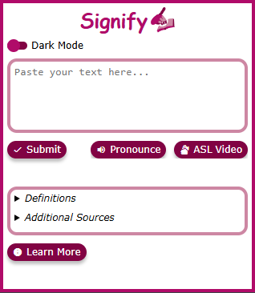

Thank you for using Signify! Here's the basic steps to use our extension.
Below are more details about the various features of the Signify extension.

Settings
The Signify Extension has the following settings:
- Dark Mode
- Load ASL Translations
Submitted Text
The Signify extension allows users to select text and enter it into the extension via three methods:
- Highlighting text on a webpage and right-clicking to open the Signify extension
- Right-clicking and opening the Signify extension
- Copying and Pasting text into the Signify extension pop-up window
After the text is submitted, you can do the following before viewing Generated Results:
- Pronounciation - Audio/Text-to-Speech Pronounciation of the text
- Sign Language - A generated Sign Language Interpretation of the text
ASL Translations
After clicking on the 'Sign Language' Buttons, a video will appear on the Signify extension popup below the submitted text.
This video will be a series of clips that demonstrate translations of individual words within the submitted text.
Generated Results
After submitting your text into the Signify extension, the extension will generate results about key words/phrases from the submitted text.
These are the results displayed on the app:
- Definitions
- Frequently Asked Questions
- Additional Sources
Disclaimer(s)
American Sign Language is a very complex language with many variations and styles.
Users should be cautious as they use the ASL translation feature of the Signify extension,
as the Signify extension is mostly a "Proof of Concept" of generating a Sign Language Interpretation of text.
The Signify extension has a limited amount of words that can be used for the translation and may not be able
to translate very complex/uncommon words.